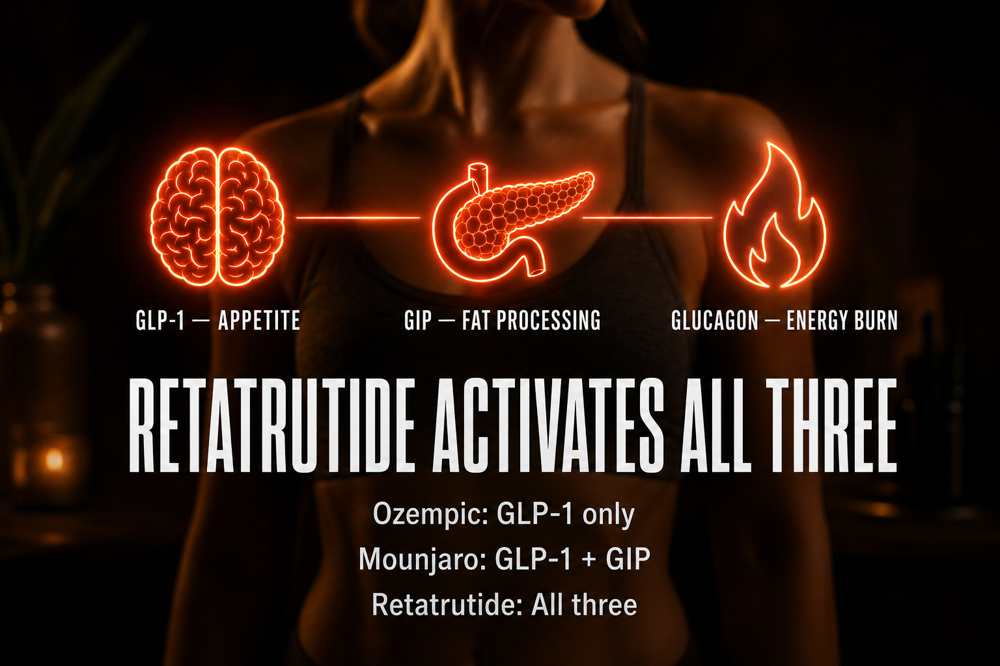

What Retatrutide Is And How People Commonly Think About It
Retatrutide is a triple-agonist peptide that activates three separate metabolic receptors simultaneously, GLP-1, GIP, and glucagon. It was developed by Eli Lilly and is currently in Phase 3 clinical trials under the name LY3437943. It is the most potent weight loss compound to reach clinical trial stage, producing an average of 24.2% body weight reduction in Phase 2 and up to 28.7% in Phase 3 preliminary data.
Unlike semaglutide (Ozempic/Wegovy) which targets only GLP-1, or tirzepatide (Mounjaro/Zepbound) which targets GLP-1 and GIP, retatrutide adds glucagon receptor activation. The glucagon component is what drives the additional fat loss, it increases energy expenditure and directly targets both visceral and subcutaneous fat.
It is not currently approved by Health Canada or the FDA for prescription use. It exists in the research peptide market as a research chemical.

How It Works
GLP-1 receptor activation reduces appetite, slows gastric emptying, and improves insulin sensitivity. GIP receptor activation enhances insulin secretion and further supports fat metabolism. Glucagon receptor activation increases energy expenditure, stimulates fat breakdown, and reduces liver fat, the component that separates retatrutide from all other GLP-1 class compounds.
The combination produces appetite suppression, metabolic rate increase, and direct fat mobilization simultaneously. This is why the weight loss numbers in trials exceed everything that came before it.
Documented Benefits
- Significant body weight reduction (24-28% in clinical trials)
- Visceral fat reduction (dangerous fat around organs)
- Liver fat reduction (relevant for non-alcoholic fatty liver disease)
- Improved insulin sensitivity
- Anti-inflammatory effects
- Improved cardiovascular risk markers
- Reduced post-exercise inflammation and faster recovery (anecdotal community reports)
Dosing Protocol
| Phase | Dose | Units (at 7.5mg/ml) | Duration |
|---|---|---|---|
| Starting | 0.5mg weekly | 7 units | Weeks 1-2 |
| Low therapeutic | 1mg weekly | 13 units | Weeks 3-4 |
| Standard | 2mg weekly | 27 units | Weeks 5-6 |
| Therapeutic | 2.5mg weekly | 33 units | Weeks 7-8 |
| Increased | 3mg weekly | 40 units | Weeks 9-12 |
| Advanced | 4-5mg weekly | 53-67 units | Weeks 13+ |
| Trial maximum | 12mg weekly | 160 units | Trial ceiling |
How To Reconstitute Retatrutide
RT15 (15mg vial) + 2ml BAC water
2ml BAC water
7.5mg/ml 50 units
| Your Dose | Units To Draw | Volume |
|---|---|---|
| 0.5mg weekly (starting) | 7 units | 0.1ml |
| 1mg weekly (standard) | 13 units | 0.1ml |
| 2mg weekly (advanced) | 27 units | 0.3ml |
Dosage Build-Up Timeline
Most people start low enough to understand how the peptide feels before increasing the dose. Increase only after the current dose feels predictable, comfortable, and sustainable.
Common Mistakes
Increasing dose before reaching steady state (takes 4-5 half lives = \~30 days)
RETA suppresses appetite so strongly that muscle loss occurs without deliberate protein intake. Target 1g per pound of body weight
glucagon activation can disrupt sleep. Inject in the morning
you need data to evaluate progress
potency degrades after this window
Contraindications And Cautions
GLP-1 activation may stimulate thyroid C-cells
Multiple Endocrine Neoplasia syndrome type 2
Active pancreatitis
Pregnancy or breastfeeding
start at lowest dose, monitor thyroid markers
GLP-1 class affects kidney function
What To Track
- Body weight (weekly, same time, same conditions)
- Waist circumference (monthly)
- Body composition if possible (DEXA or InBody scan)
- Fasting glucose and HbA1c
- Liver enzymes (ALT/AST), especially relevant for fatty liver
- Thyroid panel (TSH, T3, T4), especially if Hashimoto's present
- Heart rate (glucagon increases resting heart rate at higher doses)
- Sleep quality (subjective 1-10 weekly)
- Energy levels (subjective 1-10 weekly)
- Nausea (subjective, note timing relative to injection)
Stacks Well With
Open 10 Minute Video Script
[INTRO, 0:00-0:45] "If your doctor told you retatrutide doesn't exist, I want to show you something. This is a Janoshik Analytical test report. Independent third party lab in Prague. Test number 92381. Compound: Retatrutide. Purity: 99.647%. This is sitting in my fridge right now. I am down 13 pounds in 8 weeks. Let me tell you everything I know about this compound." [WHAT IS IT, 0:45-2:00] "Retatrutide is a triple agonist peptide. Triple means it hits three receptors at the same time, GLP-1, GIP, and glucagon. You've probably heard of Ozempic, that's a single agonist, GLP-1 only. Mounjaro is dual, GLP-1 and GIP. Retatrutide does all three. That glucagon piece is what makes it different. Glucagon tells your body to burn fat for energy, not just store less of it, but actively burn what's already there. That's why the trial numbers are so different." [THE NUMBERS, 2:00-3:30] "Phase 2 trial: 24.2% average body weight reduction. Phase 3 preliminary data: 28.7%. For context, semaglutide averages 15%. Tirzepatide averages 22%. Nothing else is close. At 221 pounds that's a potential 62 pound loss at the high end. My personal target is 190. I'll get there." [HOW TO USE IT, 3:30-5:30] "Weekly subcutaneous injection. I use a 31 gauge 1ml syringe. I mix 15mg with 2ml of bacteriostatic water, that gives me 7.5mg per ml concentration. My current dose is 2.5mg which is 33 units on the syringe. I inject Sunday mornings, morning is important and I'll tell you why in a minute. The key thing with dosing is titration, you start low, you go slow. The clinical trials started people at 0.5mg and increased every 4 weeks. Don't skip that. Steady state takes about 30 days at each dose level. That means your body reaches the full effect of the dose after about a month. If you increase too quickly you're chasing a moving target and your side effects stack up." [SIDE EFFECTS, 5:30-7:00] "The main ones are nausea and sleep disruption. Nausea is worst in the first 2 weeks at each dose increase and tends to improve. Take it easy with food on injection day. Avoid fatty meals. If you wake up between 2 and 4 AM regularly, that's a known retatrutide thing. The glucagon activation stimulates your central nervous system and some people find it keeps them alert at night. Switching to a morning injection fixed this for me. Third side effect worth knowing: muscle loss. Retatrutide suppresses appetite so aggressively that people don't eat enough protein and lose muscle alongside fat. I target 200g of protein a day. Even when I'm not hungry. Especially when I'm not hungry." [THE DOCTOR CONVERSATION, 7:00-8:30] "My weight loss doctor told me retatrutide doesn't exist. He's not wrong from inside his world. Eli Lilly's pharmaceutical grade retatrutide is not approved anywhere yet, it's still in Phase 3 trials. But the molecule itself, the same molecular structure, exists in the research peptide market synthesized by Chinese labs. My Janoshik COA confirms the compound and the purity. Your doctor works within what Health Canada approves. That world and the research peptide world are parallel, not the same. Understanding that is the starting point for having an honest conversation with yourself about what you're doing." [WHO THIS IS FOR, 8:30-9:30] "This is not a magic pill. This is a research compound with genuine clinical trial data behind it. It works. It also requires protein tracking, consistent injection schedules, patience through dose titration, and honest self-monitoring. If you're willing to do those things, it is the most effective weight management compound that currently exists." [CLOSE, 9:30-10:00] "The calculator on PeptideProtocol.ca will give you your exact reconstitution math, dose in units, and weekly schedule based on your vial size and target dose. Link is in the description. I document everything, the good, the difficult, and the expensive parts. Come back when you have questions."